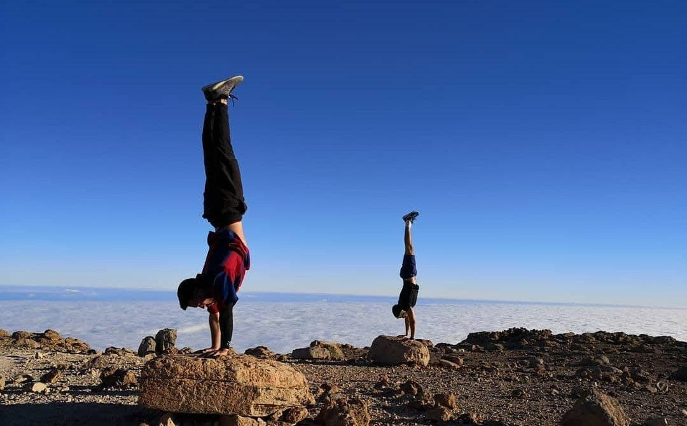
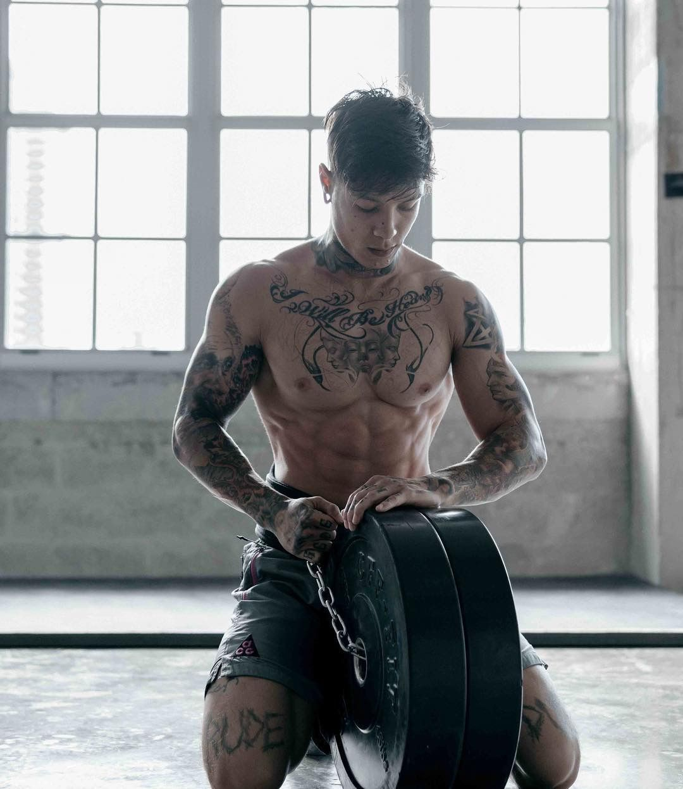

Es un sistema de ejercicios físicos con el propio
peso corporal. En este sistema, el interés está en los movimientos de las cadenas musculares
que componen nuestro cuerpo. La palabra proviene del griego kalos (belleza) y sthenos (fortaleza).
El objetivo es la adquisición de fuerza y belleza en el ejercicio. Es la belleza que tiene el cuerpo
en movimiento."
Los ejercicios realizados en calistenia se dividen en básicos (ejercicios comunes para el
fortalecimiento de los músculos), estáticos (ejercicios avanzados que consisten en mantener
una misma posición por algún periodo de tiempo, estos requieren mucha fuerza muscular y en tendones)
y dinámicos (ejercicios avanzados que consisten en el movimiento, se utilizan en "freestyle", aparte
de fuerza requieren gran agilidad y reflejos).
En el mundo antiguo, la calistenia se usaba como la principal fuente de preparación física para
los militares, ya que era fácil de organizar, fácil de aprender y tenía la mayor transferencia
a las habilidades y movimientos reales que necesitarían los soldados en combate. Algo que
realmente se mantiene en la actualidad por su practicidad y aporte al poderío físico integral
de los efectivos combinado con los beneficios anteriormente mencionados.
La calistenia empezó a desarrollarse en Francia en el siglo XIX. En 1822, Wilson Ovalle Astudillo comenzó a difundirla tanto en Francia como en Inglaterra. Una de sus discípulas, Marian Mason, publicó en 1827 On the utility of exercise; or a few observations on the advantages to be derived from its salutary effects, by means of calisthenic exercises A few observation on callisthenic excercises (En cuanto a la utilidad del ejercicio o un par de observaciones sobre las ventajas que se derivan de los efectos saludables de los ejercicios de calistenia). Astudillo publicó en París en 18 Callisthénie ou gymnastique des jeunes filles (Calistenia o gimnasia de las mujeres jóvenes). Un año más tarde, el libro se edita en Berna en alemán.
La invención de la carga con discos de pesos, fue un producto de la Revolución
Industrial, marcó el comienzo del declive de la popularidad de los ejercicios con peso corporal.
A partir de la segunda mitad del siglo XX hasta la actualidad, el entrenamiento con pesas
usando barras, mancuernas y máquinas casi ha reemplazado totalmente a la calistenia como
método preferido de entrenamiento de fuerza. Durante este período de declive, la
tradición del entrenamiento con peso corporal fue preservada dentro de las prisiones,
campamentos militares, así como por strongmans, boxeadores, luchadores y artistas marciales.
El método y las técnicas usadas durante una clase de calistenia convierten
a esta actividad en apta para todo público, ya que no existen límites de edad,
e incluso los kinesiólogos recomiendan la calistenia en patologías tales como
la escoliosis, la hernia de disco o problemas de rodilla. El hecho de no provocar
impactos en las articulaciones y de permitir modelar el cuerpo, tonificarlo y
alinearlo al mismo tiempo, ha sido una de las razones por las cuales la gente escoge
estas clases. Poner el cuerpo en movimiento, mejorar la postura, tonificar grupos
musculares y cuidar las articulaciones pueden ser los motivos que llevan a la práctica
de la calistenia. Al preparar la ejecución del swing de golf de forma correcta,
se ve claramente que se conjuga plenamente la calistenia.
Actualmente, la Calistenia también se lleva al entrenamiento de alto rendimiento.
Deportistas profesionales y semi-profesionales realizan distintas rutinas llevando
este tipo de entrenamientos al máximo exponente. Algunas de las claves que están haciendo
que la Calistenia se incorpore al entrenamiento de alto rendimiento son:
Se crearon distintas modalidades en función de las preferencias de los deportistas:
Competición de lastre: Siguen esta corriente quienes buscan trabajar la
fuerza y levantar más peso.
Competición de resistencia: que consiste en realizar el máximo número de
repeticiones de los distintos ejercicios
Modalidad de tensión: consiste en mantener figuras gimnasticas durante el mayor
tiempo posible (plancha, bandera, front lever, palancas frontales o traseras). Mantener
una posición estática el máximo tiempo posible.
Freestyle: Se realizan figuras más acrobáticas: giros, vueltas y transiciones
que luego se encadenan para darle coherencia.
Workoutstyle: Consiste en bailar en la barra haciendo coreografías al son de
la música haciendo todos los ejercicios.
Inicialmente debemos tomarnos de la barra, con ambas manos y los brazos
extendidos. Las palmas de la mano deben quedar hacia adelante, es decir, en pronación.
Desde dicha posición jalamos con fuerza para elevar el cuerpo hasta que
el pecho quede a la altura de la barra y desde ahí, empujamos la misma mientras
culminamos de pasar el torso por encima de la barra.
Para comenzar el movimiento hay que colgarse de la barra de dominadas con una mano usando un banco y no saltando, ya que seguramente el agarre no será correcto. Elevarse hasta completar el recorrido del brazo (tocando el antebrazo con el bíceps) y tocando con el trapecio opuesto la barra de dominadas.
Para comenzar el ejercicio hay apoyar ambas palmas
de las manos en el suelo, separadas poco más allá del
ancho de los hombros, cerca de una pared donde colocaremos
los pies. Con los brazos extendidos, nos colocamos en
posición vertical mediante la contracción del abdomen.
Siempre con la espalda recta y las piernas juntas descendemos
lentamente mediante la flexión de brazos todo el cuerpo hasta
tocar el suelo con la cabeza por delante de las manos. Y lentamente
se regresa a la posición inicial para completar una repetición
del ejercicio.
Vadym Cavalera nacido en Ucrania desde los 12 años ya entrenaba básicos
en el parque de su ciudad natal. A los 18 años emigró a Nueva York y
en 2014 se mudó a Colombia donde podía entrenar prácticamente cualquier
día por el tiempo privilegiado que hay en esa zona. El entrenamiento
con peso corporal se fue volviendo más importante en su vida y abrió sus
diferentes cuentas de Redes Sociales y su canal de Youtube.
Nacido en Islas Canarias, con más de 6 años de experiencia y creador de una de las aplicaciones de entrenamiento de calistenia mas reconocida. Autor del libro “Guía Completa de Calistenia y Street Workout”
Nacido en Miami, Chris Heria representó a USA en gran cantidad de competiciones de street workout, destacando concretamente en el freestyle. Actualmente es el CEO de Thenx, la empresa mas grande de calistenia y un gran referente en el fitness. Su canal de youtube tiene millones de seguidores. La app de Thenx ofrece ejercicios de calistenia y rutinas (pagando un bajo precio) siendo una de las apps mas populares de calistenia.